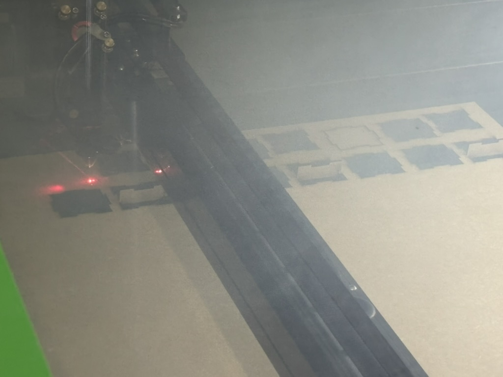
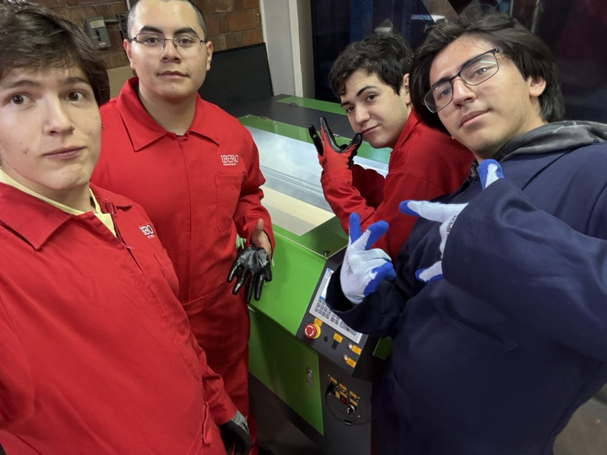
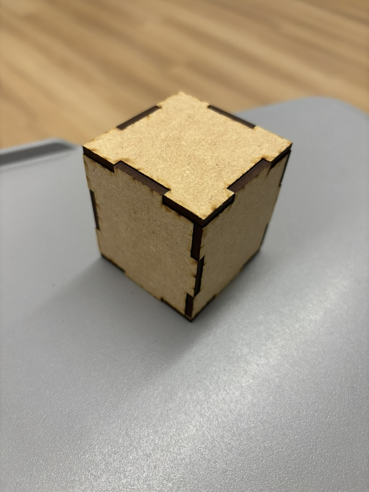

Corte Laser
Inicio
La tarea asignada consistió en elaborar un diseño tridimensional de un cubo con dimensiones de 5x5x5 centímetros, utilizando herramientas digitales de modelado. El propósito del proyecto fue construir una figura que pudiera desarmarse y ensamblarse manualmente, demostrando precisión en las medidas y una comprensión clara de la estructura espacial. Para cumplir con este objetivo, el cubo debía estar compuesto por seis piezas en total: dos destinadas a formar la base y cuatro que conformarían los lados. Este diseño permitió trabajar conceptos de ensamble, simetría y ajuste de componentes, además de fomentar la creatividad al desarrollar un modelo funcional, estético y correctamente dimensionado.
Pasos a seguir.
Primero, creé un cuadrado de medidas 50x50mm y de altura 3mm.

Posteriormente, creé 2 rectangulos diferentes en total: 2 solidos de 20x3mm y 3 mm de altura, 1 hueco de mismas medidas y 2 huecos de 15x3 y 3 mm de altura.


Luego, los coloque de esta forma en el cuadrado y los concatené, asi hice todos los lados 3 veces más

Para las bases, es el mismo resctangulo de 50x50x50mm y con los rectangulos de 20x3x3mm les haces los huecos en todos los lados y concatenas.

El proceso para cortarlo es mediante un corte laser en un panel mdf de 3mm de altura.

Y la vestimenta adecuada para el laboratorio de productos.

El resultado final quedó de la siguiente manera.
